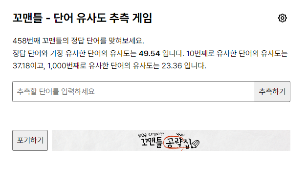

FRONTEND DEVELOPER / CAREER
어떤 서비스의
어떤 화면을 만들었는지.
클라우드 관리, 출장정비 예약, 단어 게임에서 담당한 화면과 구현을 소개합니다.
01 / CLOUD PLATFORM
오케스트로
2023.09 — 현재 / Frontend Developer
클라우드 자원과 운영 상태를 관리하는 화면
Vue 3와 TypeScript로 모니터링, 인프라 관리와 서비스 카탈로그 신청 화면을 개발했습니다. 여러 업무 화면이 함께 사용하는 테이블과 버튼의 공통 UI TF에도 참여했습니다.
모니터링
조건별 로그 조회와 통계, 알람 정책 생성 및 수정
- 조회 조건 선택
- 로그 및 통계 확인
인프라 관리
장비 목록과 상태 조회, 유형별 등록 및 수정 폼
- 유형 선택
- 정보 입력 및 저장
서비스 카탈로그
신청 유형에 따른 입력 항목과 검증, 제출 흐름
- 유형 및 정보 입력
- 검증 후 제출
화면 개발
모니터링, 인프라 관리, 자원 생성 및 수정과 카탈로그 신청
공통 구현
테이블과 버튼 개발 및 개선, 모노레포 설정과 패키지 분리 기여
팀 내 사용
Storybook 사용 가이드, 모니터링과 거버넌스 다국어 적용 참여
Vue 3 / TypeScript / Ant Design Vue / pnpm / Nx / Storybook
02 / RESERVATION
카수리
2023.02 — 2023.08 / Frontend Developer
정비 서비스를 선택하고 예약으로 이어지는 화면
엔진오일과 배터리 등 출장정비 서비스의 선택 화면을 개발했습니다. 반복되는 버튼과 입력 요소를 서비스 카드와 예약 선택 영역으로 조합했습니다.
담당한 구현
- 버튼과 입력 요소를 기본 컴포넌트로 구성
- 기본 요소를 서비스 카드와 예약 선택 영역으로 조합
- 서비스별 정보는 달리 표시하고 카드 구조와 예약 진입 방식은 통일
컴포넌트 구성 / 아토믹 패턴
03 / WORD GAME
뉴스젤리
2022.12 — 2023.01 / Frontend Intern
꼬맨틀의 기존 화면을 Vue로 전환
추측 단어를 입력하고 정답과의 유사도를 확인하는 게임입니다. 기존 HTML, CSS, JavaScript 화면을 기능별 Vue 컴포넌트로 나누는 작업을 진행했습니다.


유지한 사용자 흐름
- 단어 입력추측 단어를 입력하고 제출
- 유사도 결과정답과의 점수와 순위 확인
- 추측 이력플레이 기록과 이전 입력 확인
담당한 구현
기존 UI와 동작을 기능별 컴포넌트로 나누고, 입력부터 결과와 기록 확인까지의 흐름을 Vue 구조로 옮겼습니다.
Vue / JavaScript / HTML / CSS
관련 구현 저장소 ↗